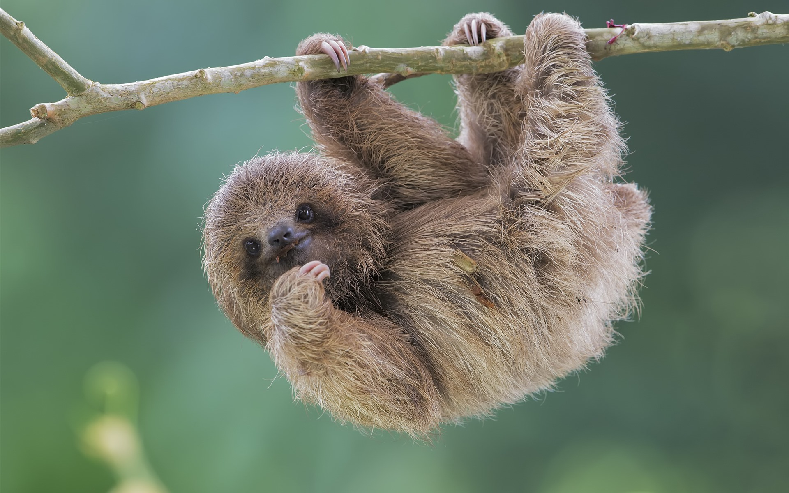

My cute sloth!!
Sloths are cute, slow-moving mammals found in Central and South America. They spend most of their time in trees, eating leaves and sleeping up to 20 hours a day. With their unique appearance and relaxed demeanor, sloths have become popular symbols of chill and tranquility in popular culture. I love sloth! Sloths are cute, slow-moving mammals found in Central and South America. They spend most of their time in trees, eating leaves and sleeping up to 20 hours a day. With their unique appearance and relaxed demeanor, sloths have become popular symbols of chill and tranquility in popular culture. I love sloth! Sloths are cute, slow-moving mammals found in Central and South America. They spend most of their time in trees, eating leaves and sleeping up to 20 hours a day. With their unique appearance and relaxed demeanor, sloths have become popular symbols of chill and tranquility in popular culture. I love sloth!